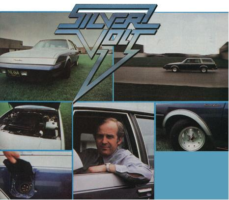
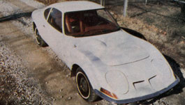

Here's proof that an electric vehicle can be practical and beautiful:
For those of us who feel that the Silver Volt's estimated $14,000 cost is a bit beyond our price range-but are still seeking some practical substitute for today's fuel-thirsty automobiles-MOTHER now has available a set of plans that will enable the average "backyard mechanic" to convert just about any lightweight vehicle to hybrid electric drive (see "An Amazing 75-MPG Hybrid Electric Car! " in MOTHER NO. 58, page 180). For your complete plans package, send your name and address-along with $15-to Mother's Plans; Hybrid Electric Car, P.O. Box A, East Flat Rock, North Carolina 28726.
America's love affair with the automobile has lasted more than 50 years, and-no doubt will endure . . . even through the fuel crises that are bound to occur (with increasing frequency) in years to come.
It should be obvious, then, that some drastic changes will have to be made in automobile design if we're all to enjoy the luxury of personal transportation . . . and the Electric Auto Corporation's Silver Volt is certainly a step in the right direction.
The EAC's streamlined five-passenger runabout is not a "scratch-built" automobile . . . its chassis and a good part of its body have been "borrowed" from the General Motors assembly line under special contract.
Sir Jon Samuel-the transplanted British baronet who is the firm's president-explains the two-fold reason for this: "At present we're in the midst of an intensive testing program . . . studying the performance of our own battery and drive system. We know that GM manufactures a reliable automotive product, so-rather than get caught up in all the design headaches that go with building an entirely original vehicle-we purchase our units from the Detroit firm and make our own alterations. Not only does this practice bring our costs down, but it also places the actual manufacturing burden on another corporation."
Don't get the impression that the Silver Volt is just a warmed-over Buick, however. On the contrary, it's been carefully engineered and adapted to its new "electric" role. For example, because of the converted car's increased weight (added by batteries and other equipment), its wheels, tires, springs, and suspension components have been proportionately upgraded.
The body has also received some modifications (as you can see in the accompanying photos) which, aside from being cosmetic, actually decrease wind resistance and thus improve the vehicle's efficiency.
Interior changes are noticeable, too . . . besides the plush appointments (the Silver Volt is indeed a practical luxury car), the instrument panel indicates battery voltage, amperage, state-of-charge, and other powerplant-related conditions which wouldn't be applicable to a normal vehicle.
Normally, one wouldn't expect a 5,200-pound car to be a practical electric vehicle. But the Silver Volt boasts two major improvements in design which set it apart from most other "amplified" forms of transportation: [1] It uses a special quick-charge battery (developed over the past 10 years by EAC's parent company, Electric Fuel Propulsion, Inc.) that can absorb 80% of its power "refill" in just 45 minutes, without damage to its plates (this is a great improvement over the charging capability of a "normal", industrial lead-acid battery). [2] The Silver Volt has an auxiliary power unit-in effect an "on board" generator-which nearly doubles the car's range. This wa ter-cooled APU also provides interior heating and power to the air conditioning . . . and charges the vehicle's secondary 12-volt battery, which runs the other accessories. (The generator can be used as a source of emergency power if the auto's main battery is drained, too.)
So the Electric Auto Corporation's prototype is engineered around its extra weight, and the additional poundage is no real detriment-in Sir Jon's opinionsince it gives the Silver Volt "rather a Rolls Royce feel".
The heart of this attractive machine is a 144volt, 20- to 50-KW, self-cooling DC electric motor, controlled by a separate "exciter" (which provides variable control over the motor's field during acceleration). This assembly, in turn, is connected to an efficient automatic transmission, which utilizes a high-stall-speed, lockup torque converter. (This type of gearbox is all-important to the performance of the automobile . . . not, only is it as effective as a manual transmission, but its high stall speed keeps the motor cool, while the lockup feature improves the Volt's overall efficiency.)
Many people are prejudiced against electrically powered autos simply because such vehicles need to be recharged at regular intervals . . . and the Silver Volt is no exception to the "rejuicing" rule. But this particular bit of bother is kept to a minimum in the EAC vehicle through careful planning: An electronic charging unit built right into the automobile-separate from the gasoline-powered APU-allows the input of either 120-volt or 240-volt power (at three separate ampere ratings) from any standard household socket. In addition, there's provision for an external fast-charge hookup, which can be accomplished with either an external stationary or a mobile quick-charging unit. (EAC's parent company has developed such machines and is presently involved in a field testing program . . . which will include installation and use of the "charger" in the Fort Lauderdale, Florida area by the end of this year.)
Battery watering-and providing adequate safety measures-can also be difficult with electrics . . . but the Silver Volt seems to have killed those two birds with one stone. First, there's only one watering point for all the cells within the vehicle . . . and that access has its own overflow, so the batteries-which are self-leveling-can't be overfilled. (For convenience, a warning light comes on when the storage units' water level is below normal.) And second-since batteries do produce potentially dangerous hydrogen gas-this same "watering manifold" serves as an escape route for the explosive fumes . . . and is equipped with a flame trap to prevent a fire-should there ever be one-from traveling back down through the pipes and into the battery compartment itself.
Other safety features on the car include an automatic key switch disconnect-and a battery cover interlock system-that will come into effect whenever the vehicle is being charged.
Unlike many electric vehicles, the Silver Volt's acceleration and handling are very similar to those of a conventional automobile. Even with a "tired" battery, the car that MOTHER's staffers tested had plenty of pickup and-undoubtedly because of its weight-rode very smoothly. Unfortunately, there were no appreciable hills in the test area, but the manufacturers assure us that the vehicle's "gradeability" is better than that of most electrics . . . and that, for passing purposes, the car can attain a "top end" of 70 MPH.
Range is also an important consideration with electric cars and, of course, is dependent upon the driving conditions one encounters. Because the Silver Volt is equipped with regenerative braking (which turns the motor into a batterycharging generator whenever the car is decelerating), its effective range is increased slightly in a "normal" driving situation (as opposed to constant-speed highway driving). For example, the Silver Volt will go over 60 miles at a steady 55 MPH, and about 130 at a constant 30 MPH . . . but under normal conditionswhich include stops, starts, and variable speeds-the vehicle should attain an impressive range of 80 to 100 miles.
"Fuel" economy is a factor, too, and one which can be determined in a number of ways. The Silver Volt folks have to take the cost of charging and partial APU use into consideration . . . so they calculate-at Detroit, Michigan rates-that it costs about $1.30 to bring the car to full charge and another 30 cents or so to cover the cost of gasoline on an 80-100 mile run. Such figuring indicates that the Silver Volt can operate for at least 80 miles at a cost of $1.60 . . . while a conventionally powered auto which gets 20 MPG would burn about $4.00 worth of fuel during that same trip. So, using this comparison as a yardstick, we can estimate that the Silver Volt will often achieve the equivalent of 50 MPG!
Unfortunately, the EAC vehicle is not yet available to the public . . . and, with an estimated sticker price of about $14,000, it may not appeal to the "average Joe" anyway. However, there has been a tremendous interest in the car even at this early date, and EAC feels sure that it will increase throughout the next year . . . when 100 vehicles will be road-tested in Florida under normal, everyday driving conditions.
Meanwhile, the Silver Volt is being constantly improved, with early 1981 set as a target date for production . . . but you can be sure Sir Jon won't release the vehicle until he's confident of its quality and total reliability: He'd rather be late with the right product than early with the wrong one!
EDITOR'S NOTE: If you'd like to know more about the Silver Volt, the Electric Auto Corporation has a fact sheet available to the general public. Just send a self-addressed, stamped envelope to Electric Auto Corporation, Dept. TMEN, 2237 Elliot Avenue, Troy, o Michigan 48084.
|
 CLOCKWISE FROM BELOW: The Silver Volt, finely detailed from end to end... Sir Jon Samuel at the wheel of his brainchild... ""Fill 'er up"" with 120- or 240- volt power... Quick-charge batteries and an onboard generator for practicality. ... EAC's vehicle is streamlined, but large enough for passenger comfort... On the road: a 130-mile (maximum) range, a ""top end"" of 70 mph, and a ""Rolls Royce"" ride. |
 |
|